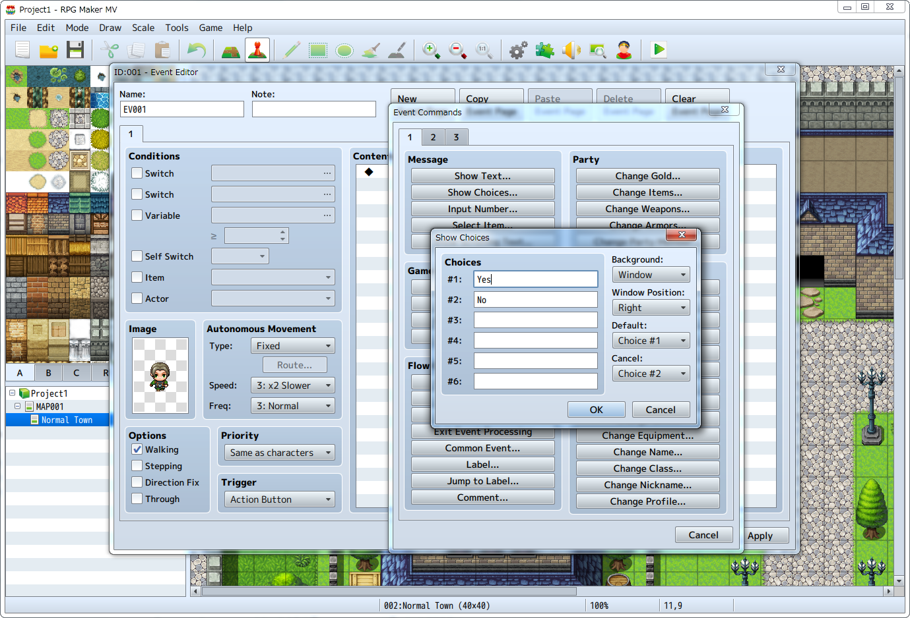
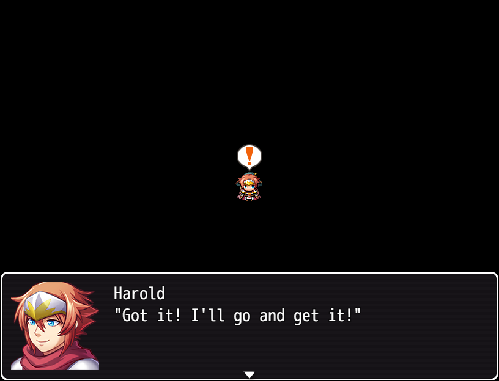
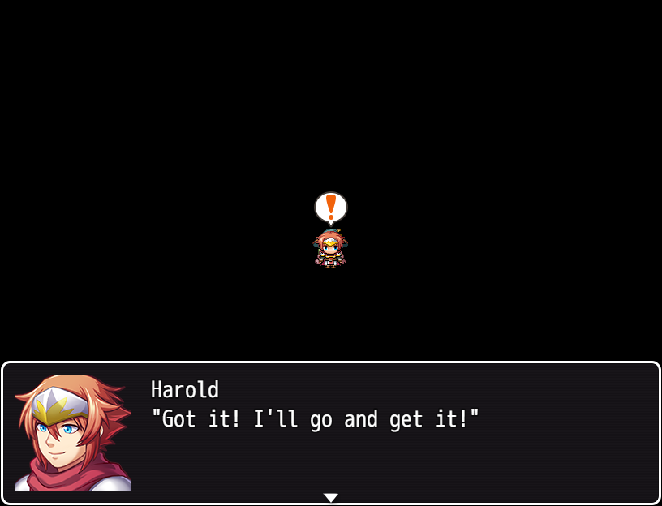
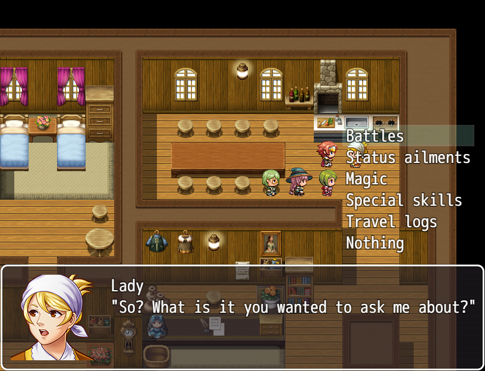

Events
Events happen in situations such as when having conversations with characters and obtaining items from treasure chests.

Main Features
- Event Test Features
- Checking the display of pictures, movement and rotation is possible without using Playtest.
 

- Additional Event Commands
-
It is now possible to configure the below new items.
- Actor: [Change Profile]
- Actor: [Change TP]
- System Settings: [Change Vehicle BGM]
- System Settings: [Change Defeat ME]
- Battle: [Change Enemy TP]
- Advanced: [Plugin Commands]
- Event Command Revisions
-
- The limit of choices has been raised from 4 to 6, and it is now possible to indicate the initial position and transparency of windows.

- The limit of choices has been raised from 4 to 6, and it is now possible to indicate the initial position and transparency of windows.